🌵 Topology
The topology processing in VeraGrid is handled automatically, and you need to do nothing for it to work.
Branches with the reducible flag enabled are candidates for disappearing at the
`NumericalCircuit level when computing any simulation. Typically, switches will be reduced, but if not they will
use their declared impedance, which is not advised.
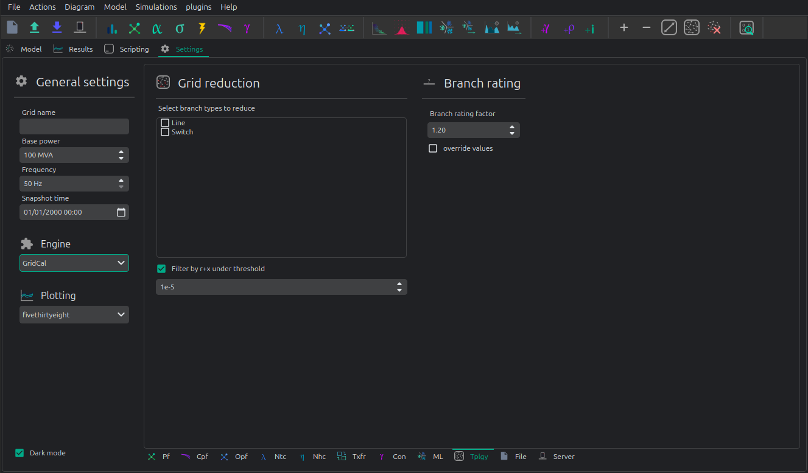
Other topology functions
There are some other topological functions that can be accessed through the GUI for special purposes.
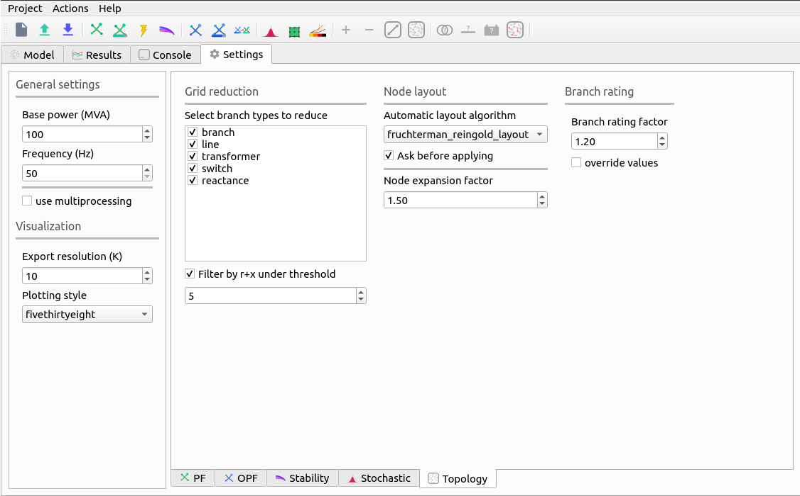
Select branch types to reduce The topological reduction is a top feature of VeraGrid. With it you can remove the influence of the redundant branches. This is specially relevant when you are provided with grids that have thousands of switches and connection branches that add no simulation value. Those can be removed in a very smart way.
Filter by r+x under threshold
This feature establishes if to topologically remove branches whose resistance + reactance
is lower than a threshold. The threshold is given by the exponent number. i.e. 5 corresponds to r+x < 1e-5.
Automatic layout algorithm Another nice feature in VeraGrid is the ability to sort bus bar locations according to a graph algorithm. This is especially useful when you are provided with a grid that has no schematic, where the graphical representation depict all the bus bars in the same place.
Ask before applying Raise a question before applying the graph layout algorithm.
Node expansion factor The nodes in VeraGrid can be expanded (far from each other) or shrink (closer) this parameter set the “explosion” factor that determines how far from each other shall the nodes become.
Branch rating factor For the branch automatic rating, this is the rate multiplier.
Override values If selected any non-zero rate is overridden by the calculated value.
Theory
In this section, we are going to explain how to do topology processing properly once and for all. This topic is of capital importance in power systems but is rarely dealt with in a structured and comprehensive manner.
A Graph in Power Systems
A graph is composed of:
Nodes: These are the buses of a model that represent points of calculation, such as substation bars, generation points, or load centers.
Edges: Represent the connections, such as transmission lines, transformers, or switches.
This abstraction simplifies the network from the bolts and welds to a simpler, yet correct simplification that retains the essential connectivity information.
Note about ontologies: In the ontologies world, any device can be related to any other in a all-to-all fashion. This means that nothig prevents a line to be connected to more than two points, among many other wasteful modelling propositions. In this article we will use proper network theory graphs where branches transmit electricity and nodes are the points where we measure.
Why is Topology Processing Important?
Topology processing ensures that the network’s operational model reflects accurately its physical state. Without proper processing, analyses may yield inaccurate results, leading to operational inefficiencies or even failures.
Topology processing helps to ensure the model is computationally feasible, to identify and correct data inconsistencies and to optimize the simulation by reducing unnecessary complexities.
In less abstract terms, topology processing is about determining the simulatable sub-circuits within a a collection of equipment. Here, a circuit refers to a collection of equipment, its relationships, and states in the most general sense.
We perform the topology processing as a precaution before simulating, because what we want is to be able to use the electrotechnical formulas to get the physical magnitudes, and for that we must abide to some rules. Thus, from circuit theory, we derive the following fundamental relationship:
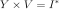
Where:
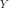
is the nodal admittance matrix.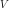
is the vector of bus voltages.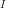
is the vector of current injections at the buses.
To solve for , we need to invert :
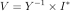
However, may not always be invertible for any arbitrary collection of equipment. This is because certain branches in the circuit might have zero impedance, making singular. Or simply because there are grid parts disconnected from the rest, making also singular.
The topology processing involves the following steps:
Reduce problematic branches: Address switches and jumpers that cause singularities.
Find the simulatable islands: Identify isolated groups of interconnected elements.
Segment the circuit into sub-circuits: Divide the system into smaller, manageable parts.
Simulate each circuit independently: Perform separate analyses for each sub-circuit.*
Reassemble the results: Combine outcomes to match the original circuit structure.
Steps 2 to 5 are necessary only for simulations reliant on equality constraints, such as power flow. Simulations involving overdetermined linear systems, such as optimizations, do not require separate handling of islands.
Step 1: Reduce the problematic branches
In the context of power systems, certain branches can cause computational issues due to their characteristics, such as zero impedance or inactive status. These branches, referred here to as problematic branches, must be effectively removed^ to ensure accurate simulations and analyses. To better understand this, let’s examine the following example circuit:
Bus from |
Bus to |
Reducible |
impedance |
active |
|---|---|---|---|---|
0 |
1 |
yes |
0 |
yes |
0 |
2 |
no |
0.05j |
yes |
1 |
3 |
no |
0.01j |
yes |
2 |
3 |
yes |
0 |
no |
It is important to understand the meaning of zero when talking about physical magnitudes such as the impedance. Zero is the absence of, therefore zero impedance means that the branch is not there. Hence, we must remove it and join the buses it connects.
This circuit consists of 4 buses and 4 branches. Two of these branches are marked as “reducible,” meaning their removal is needed to not impact the network’s functional properties for simulation purposes. These zero-impedance branches do not contribute to the network’s overall impedance matrix, but would make it singular if added. To identify reducible branches, we construct an adjacency matrix representing connections between buses. The adjacency matrix is computed using the following algorithm:
n = number of buses
m = number of branches
A = lil_matrix(n, n)
for k=0 to m:
f = bus from of the branch k
t = bus to of the branch k
if branch k is active and reducible:
A(f, f) += 1
A(f, t) += 1
A(t, f) += 1
A(t, t) += 1
end-if
end-for
A method that is found to be approximately 2.5 times faster in practice is to form the computationally simpler connectivity matrix C, and then compute A from it by
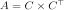
See the following pseudo-code:
n = number of buses
m = number of branches
C = lil_matrix(m, n)
for k=0 to m:
f = bus from of the branch k
t = bus to of the branch k
if branch k is active and reducible:
C(k, f) = 1
C(k, t) = 1
end-if
end-for
A = C.transpose x C
Both methods require matrices
CandAto be sparse. Dense matrices would demand excessive memory and computational resources, making them impractical for power system applications.
The nifty trick of composing A with the reducible elements, allows us to use a
standard island-finding algorithm (see the annex) to identify groups of buses connected by
reducible elements that can be treated as a single bus because they are
topologically the same place. The result of that will be a mapping vector of size equal to the
number of nodes where each value represents the index of the node that remain for calculation
In the given example, buses 0 and 1 are grouped, meaning bus 1 is effectively merged into bus 0. Buses 2 and 3 remain as independent nodes.
After processing the reducible branches, the simplified circuit is:
Bus from |
Bus to |
impedance |
|---|---|---|
0 |
2 |
0.05j |
0 |
3 |
0.01j |
The mapping vector of this 4 bus example would be:
[0, 0, 2, 3]
The bus at position 0 remain, the bus at position 1 is removed and represented by the bus 0 the buses 2 and 3 each remain.
Step 2: Find the simulatable islands
Splitting into islands that are electrically connected requires the island search function (see the annex) again but used with a different adjacency matrix. For that, we need to compute the Adjacency matrix using the non-reducible, active branches. This is, the branches that have impedances and can transmit electricity. These are the branches that we did not eliminate in the step 1.
To compose the connected adjancency matrix A we do need to fill the incidence matric C.
With that
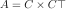
: n = number of buses
m = number of branches
C = lil_matrix(m, n)
for k=0 to m:
f = bus from of the branch k
t = bus to of the branch k
if (branch k is active) and (bus f is active) and (bus t is active):
C(k, f) = 1
C(k, t) = 1
end-if
end-for
A = C.transpose x C
The steps here are:
Initialization: The connectivity matrix
Cis initialized to capture branch connections.Branch Iteration: Each branch is checked for status=active and the corresponding buses are verified to be active as well.
Matrix Assembly: Connections between the “from” and “to” buses are recorded in
C.Adjacency Matrix Construction: The final adjacency matrix
Ais obtained through a matrix multiplication operations onC.
With the adjacency matrix A constructed, standard island-detection algorithms can be
applied to identify groups of interconnected buses. These groups, referred to as
“simulatable islands,” represent sub-networks that can independently support simulation.
islands = find_islands(A)
The islands variable contains a list of vectors, where each vector represents the
indices of buses within a single island. For example, in a simple network, two
interconnected buses might form one island, while isolated buses form separate islands.
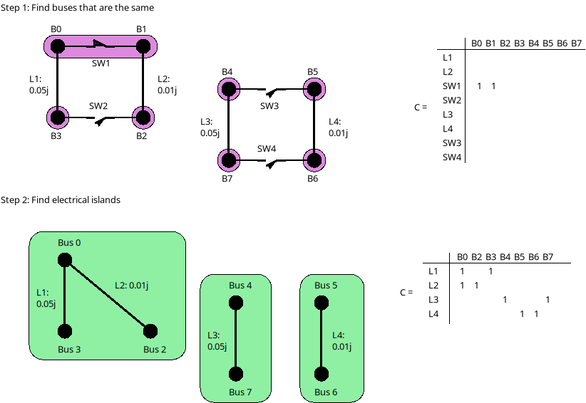
For each identified island, it is crucial to verify the presence of at least one voltage source or slack node. Without a slack node, the island cannot be powered, resulting in a blackout for that portion of the network. Slack nodes provide the necessary reference voltage and power balance for the island’s operation.
Step 3: Segment the circuit into electrical islands
After removing problematic branches, and finding the bus indices that constitute islands, the next crucial step is to segment the circuit into sub-circuits or islands.
An island is defined as a group of interconnected buses that form an independent sub-network. This segmentation is essential for accurately analyzing and simulating the system. To achieve this, we slice the grid’s data structures based on the island information.
An island is represented as a vector of bus indices. For instance, if an island
contains buses 4, 5, 6, and 7, this vector would be [4, 5, 6, 7]. Using this
information, slicing a data structure containing only bus data is straightforward.
However, slicing structures such as branches or loads requires additional steps
to relate them to the buses that define the island.
To efficiently handle slicing, we create a bus mapping array that maps the original bus indices to the indices of the island. For instance, consider a circuit with 8 buses, where the mentioned island comprises buses 4, 5, 6, and 7. The mapping process is as follows:
Initialize an array of size 8 filled with
-1to represent unmapped buses.Assign new island indices to the corresponding positions in the array.
island = (4, 5, 6, 7)
bus_map = -1 x ones(8)
ii = 0
for i in island:
bus_map[i] = ii
ii += 1
end-for
The bus map is:
bus_map = (-1, -1, -1, -1, 0, 1, 2, 3)
Now, consider the following branch data for the 8-bus grid:
Name |
bus_from |
bus_to |
|---|---|---|
0:Branch |
2 |
0 |
1:Branch |
3 |
2 |
2:Branch |
1 |
0 |
3:Branch |
1 |
2 |
4:Branch |
6 |
4 |
5:Branch |
7 |
6 |
6:Branch |
5 |
4 |
7:Branch |
5 |
6 |
With the following algorithm we can determine which branch indices belong to the island:
m = number of branches
elements_indices = list()
for k=0 to m:
f = branch k from bus
t = branch k to bus
if bus_map[f] > -1 and bus_map[t] > -1:
elements_indices.add(k)
In this case, the branch indices are (4, 5, 6, 7).
Hence, the sliced island branch data is:
Name |
bus_from |
bus_to |
|---|---|---|
4:Branch |
6 |
4 |
5:Branch |
7 |
6 |
6:Branch |
5 |
4 |
7:Branch |
5 |
6 |
We use the bus_map to re-map the “from” and “to” buses of the sliced structure
from the original bus indices to the island bus indices:
Name |
bus_from |
bus_to |
|---|---|---|
4:Branch |
2 |
0 |
5:Branch |
3 |
2 |
6:Branch |
1 |
0 |
7:Branch |
1 |
2 |
For data structures like loads or generators, the slicing process is similar. However, these structures typically involve a single bus index rather than “from” and “to” indices. By consistently applying the bus mapping array, we can accurately extract relevant data for any island.
Segmenting the circuit into islands eliminates inactive buses, branches, and devices that might otherwise introduce errors into simulations. This step significantly improves computational efficiency and ensures cleaner, more reliable data for numerical calculations such as power flow analysis. The resulting islands form distinct, manageable sub-networks ready for independent simulation and analysis.
Step 4: Simulate the islands independently
This is a very straight forward step, since we have already processed the initial grid information into clean and simulatable sub-circuits. In this step we simulate them one by one using the power flow simulation for instance.
Step 5: Reassembly
At step 4 provides us with the values for the nodes that remained after the topology processing. However we need to expand those results into the complete set of nodes. We use the mapping vector found at step 1 to expand the bus results such as the voltage.
The spirit of CIM
If you’ve encountered CIM or CGMES, or participated in guild discussions, you’ve likely heard about node-breaker and bus-branch modeling styles as distinct approaches. ENTSO-e’s introductory CGMES training has historically taught that you can model using either ConnectivityNodes or TopologicalNodes (AKA Buses). This guidance has been shared with hundreds of engineers accustomed to simpler models of buses, lines, etc., only to face what seems to be gratuitous complexity.
The modeling approaches are often thought of as follows:
Bus-branch modeling: This style involves using TopologicalNodes and no switches.
Node-breaker modeling: This style involves using ConnectivityNodes and switches.
This school of thought leaves us in a vacuum that we may feel inclined to fill with ad-hoc topology processing cases. But, after going through the described steps, one finds that this complexity is indeed unjustified because the node-breaker and bus-branch philosophies are fundamentally the same. In steps 1 to 3 we have implicitly demonstrated that:
A ConnectivityNode is a bus before the topology processing.
A TopologyNode is a bus after the topology processing.
Following this new found truth, the TopologyNode should not be shared in any model or database since they are a particular product of the database state and the switches should always be reduced before simulation to avoid numerical singularities.
Again, a common misconception is that bus-branch models
lack switches, whereas node-breaker models include them. In practice, both
approaches can incorporate switches. This fact is often emphasized in official CGMES trainings.
If a ConnectivityNode must have an N:1 association with a TopologicalNode, this
implies that any ConnectivityNode ultimately represents a TopologicalNode.
This reinforces the argument that both are two faces of the same coin,
Making both styles fundamentally equal.
The Philosophy Behind CIM
In this light, one can only imagine that the intent behind CIM’s design philosophy is to model grids using ConnectivityNodes, with TopologicalNodes emerging afterwards through topological reductions (e.g., simplifying branches). This implies that we should not share TopologicalNodes, since those are internal artifacts of a calculation software such as VeraGrid.
Over time, the practice of treating detailed models as node-breaker and less-detailed models as bus-branch has created an artificial divide that has proven impractical and needlessly complicated. This is further exacerbated by the fact that most common mainstream software also makes a division between substation nodes and other nodes, when all nodes are in fact equal in the eyes of math.
Then, why the Complexity?
One can understand that the lack of a clear topology processing method has likely sparked this complexity, creating a middle ground that combines the worst aspects of both approaches. Engineers attempting to reconcile the two styles often encounter unnecessary confusion and inefficiency mostly steaming from folklore rather than rigor.
Revisiting CIM’s Spirit
If we examine the original spirit of CIM: ConnectivityNodes are no different from traditional Buses. The distinction is a myth that adds unnecessary complexity to modeling workflows. By adhering to this perspective, we can simplify processes and focus on building more efficient, accurate and interoperable models.
How is it done in VeraGrid?
In VeraGrid, the MultiCircuit serves as the grid’s in-memory database. It is crucial that no topological processing is ever performed directly on the MultiCircuit. Doing so risks altering the topology of elements, potentially breaking the consistency of the original configuration.
Why Avoid Topological Processing on the MultiCircuit?
Consider a generator initially connected to Bus 1. After performing topological processing, it might end up connected to Bus 2. How could we recover the original connection to Bus 1? Simply put, we cannot. And believe you me, the genrator in the power plant is connected to bus 1, and no operator ever unwelds it to weld it to bus 2. That is only a fiction of the topology processing.
Altering the MultiCircuit directly compromises the data integrity, making it impossible to restore the original topology. In CIM, this is probably why there are two distinct sets of objects; ConnectivityNode to maintain the structure and TopologicalNode to represent the final connectivity for simulation porpuses. This reinforces the idea that we must only model with ConnectivityNodes, which for simplicity are always buses in the end in VeraGrid.
The Role of NumericalCircuit
If topology processing should not occur over the database, then where should it be done? The solution in VeraGrid is to provide the NumericalCircuit, a snapshot of the MultiCircuit at a specific state. This snapshot is fungible, meaning that any modifications made to it will not impact the original MultiCircuit and will vanish after the calculation. As such, all topology processing steps are performed on the NumericalCircuit, as described earlier in this section. This is a clean, correct and paralelizable approach.
CIM Compatibility Adjustments
To ensure compatibility with CIM standards, we have introduced a single adjustment:
Every ConnectivityNode must either create a bus or be associated with an existing bus.
Similarly, every TopologicalNode must either create a connectivity node or be associated with one.
This guarantees that no matter which object you use for modeling, the system will ultimately rely on buses, maintaining consistency across all calculation processes in every scenario and avoiding the superficial complexity of having two sets of objects for the same thing; Representing a node in a graph.
By doing this, we also put an end to the node-breaker vs. bus-branch feud, allowing for compatibility with the so-called legacy models.
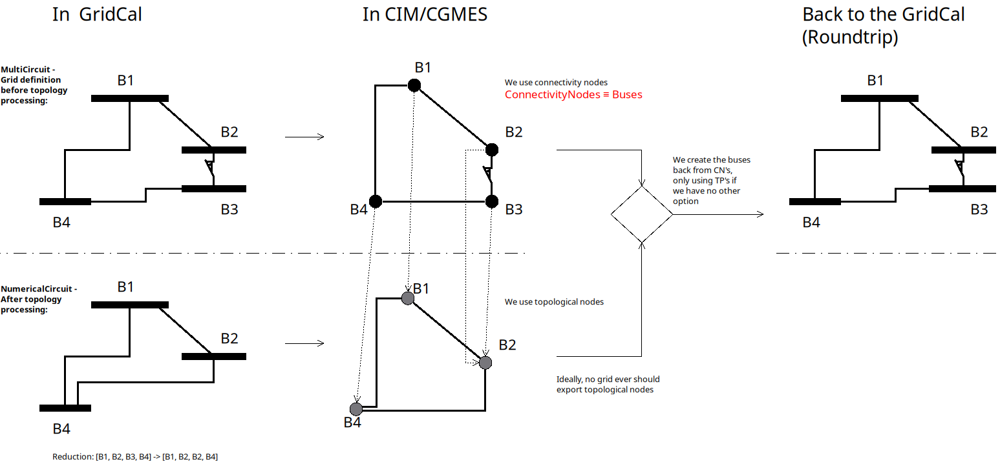
Takeaways
Bus-branch and node-breaker modelling styles are the same thing.
In VeraGrid (or any other sofwtare), always model with buses, you’ll thank me later.
In CIM/CGMES, model always with ConnectivityNodes and forget about the TopologicalNodes, you’ll thank me later.
In topology processing, we use the find-islands algorithm (DFS), combined with different compositions of adjacency matrices (A). General element traversing should only happen when composing the adjacency matrices.
Annex: The islands search function
The island search function is a depth-first search that exploits the CSC structure of the adjacency matrix. The particular version of the DFS algorithm presented here avoids recursivity in favor of cues for faster execution.
indptr: index pointers in the CSC scheme
indices: column indices in the CSCS scheme
active: array of bus active states
n = bus number
visited = zeros(n)
islands = list()
node_count = 0
current_island = zeros(n)
island_idx = 0
for node=0 to node_number:
if not visited[node] and active[node]:
stack = list()
stack.add(node)
while stack.size > 0:
v = stack.first
remove first element from the stack
if not visited[v]:
visited[v] = 1
current_island[node_count] = v
node_count += 1
for i=indptr[v] to indptr[v + 1]:
k = indices[i]
if not visited[k] and active[k]:
stack.add(k)
end-if
end-for
end-if
end-while
# slice the current island to its actual size
island = current_island[:node_count].copy()
island.sort() # sort in-place
# assign the current island
islands.append(island)
# increase the islands index, because
island_idx += 1
# reset the current island
# no need to re-allocate "current_island" since it is going to be overwritten
node_count = 0
end-if
end-for
Registered Result Properties
NodeGroupsResults registered properties
The node-groups result stores the clustering inputs and resulting node groups.
Property |
Type |
Description |
|---|---|---|
|
|
Training matrix used to compute the node groups. |
|
|
Sigma value used by the node grouping algorithm. |
|
|
Node groups expressed with bus names. |
|
|
Node groups expressed with bus indices. |